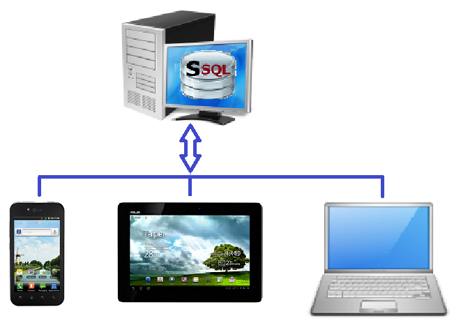

| Application | Operating System | Description | Download File |
|---|---|---|---|
| Sql Developer Tool + Jdbc Connection Driver |
All |
This tool can be used to manage selimsql database and execute sql statements.
|
SSqlDevClient1.3.1.zip (Note: Download this zip file to a directory(for example: "/SSqlDevClient"). Extract zip file in your directory and double click "SSqlDevClient.jar" which is runnable java application. This application is expected to be run, if your jre version has no problem. However, you have double clicked the "SSqlDevClient.jar", if it has not run, start it by double clicking the file named "SSqlDevClient.bat" (for Windows) or "SSqlDevClient.sh" (for Linux)) |
| Jdbc Connection Driver | All |
This driver can be used to connect selimsql database and execute sql statements.
|
selimSql-1.3.0.jar |
| SSql Database Server | All |
...Same description with previous...  |
SSqlDbServer1.3.1.zip (Note: Download this zip file to a directory(for example: "/SSqlDbServer"). Extract zip file in your directory and double click "SSqlDbServer.jar" which is runnable java application. This application is expected to be run, if your jre version has no problem. However, you have double clicked the "SSqlDbServer", if it has not run, start it by double clicking the file named "SSqlDbServer.bat" (for Windows) or "SSqlDbServer.sh" (for Linux)) |
| SSqlDbAdmin | Android (Mobile Phone, Tablet) |
This application is a database manager for android. With your android phone or tablet: -Build/drop database on your SD card. -Build/drop table with 10 types of column. -Build/drop index of tables. -Admin databases, tables, columns and indexes. -Insert, update, delete, show records. -Select sql helper for query tables. -Save and load sql statements for reuse... |
SSqlDbAdmin.apk |
| SSql Android DbDriver | Android |
This driver can be used to manage SelimSql database on local disk and connect to db server for Android applications.
Android developers can use this library by including "libs" directory of their applications. Look at for detail. |
selimSqlAndroid-1.2.7.jar |
Copyright © 2009 - 2019 SelimSql